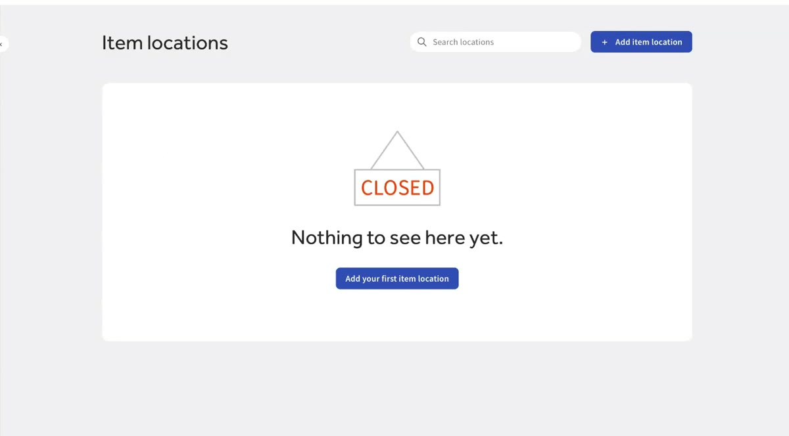
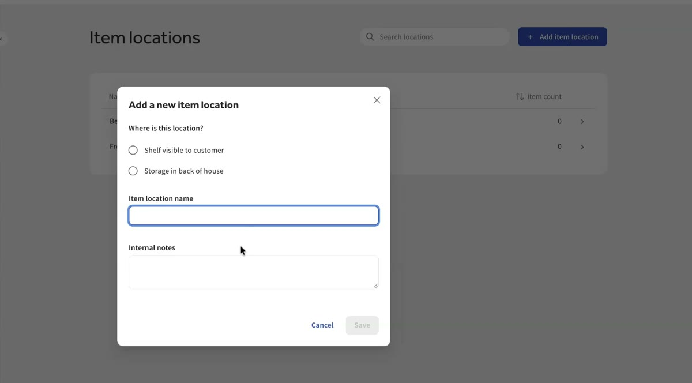
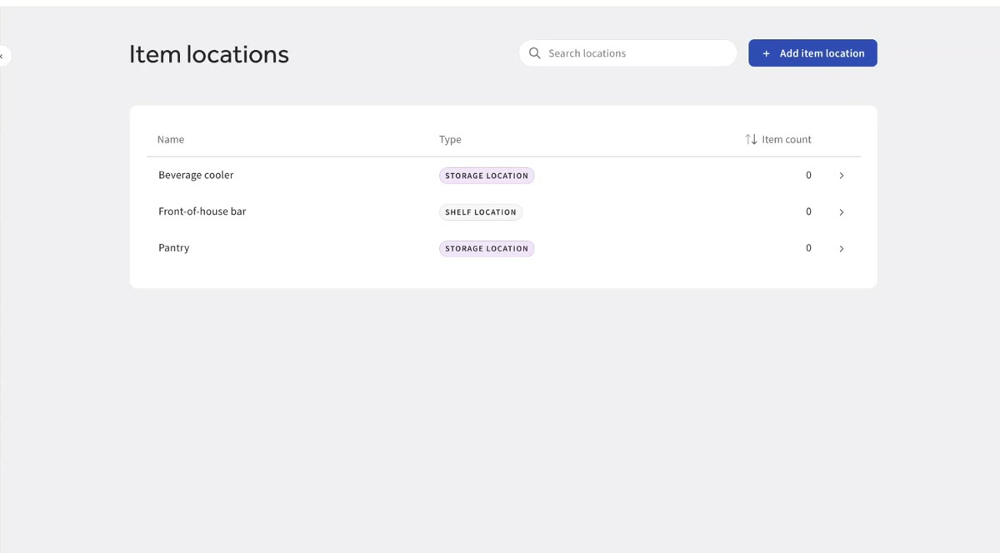
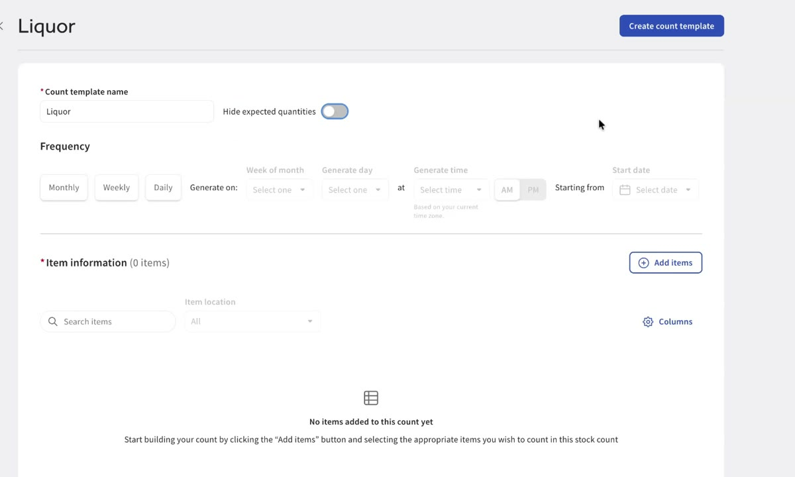
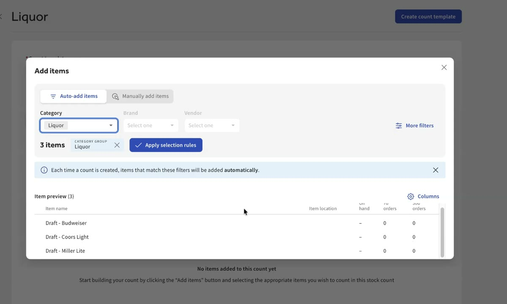
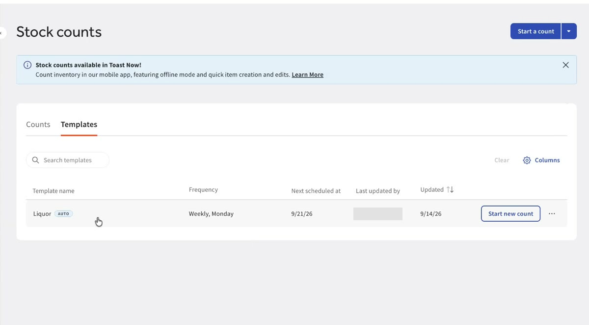
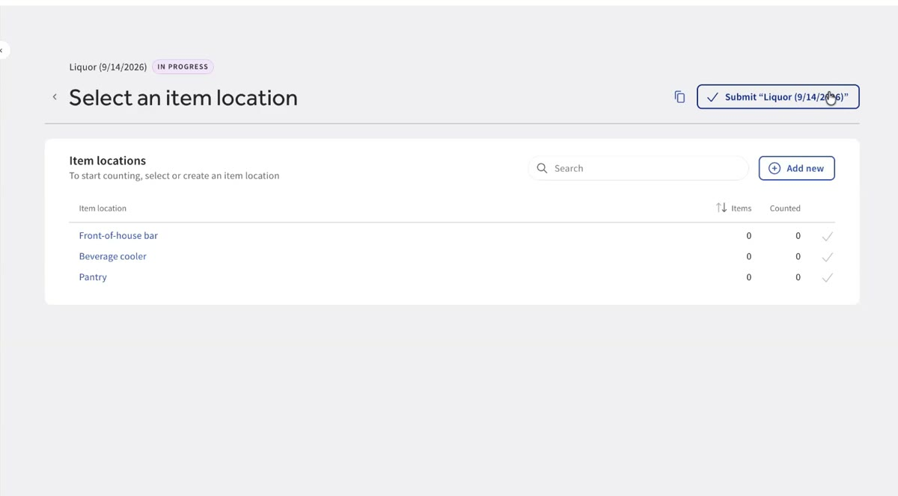
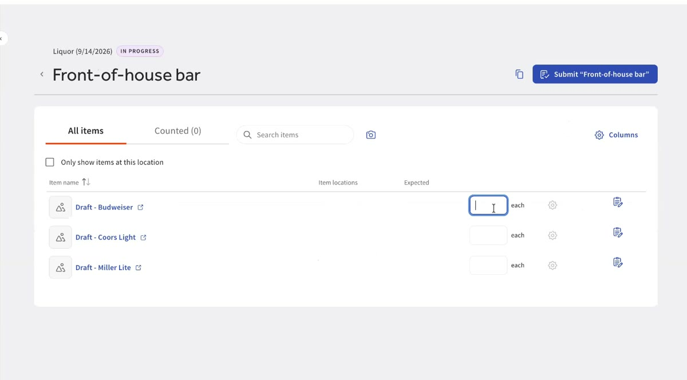
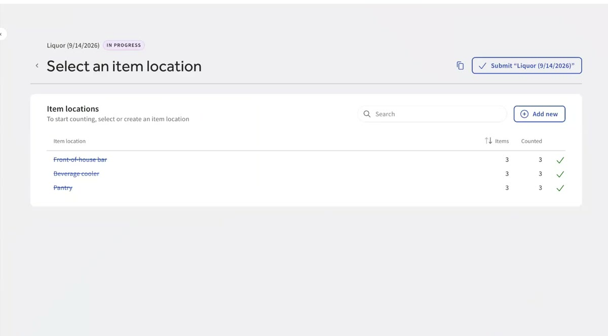
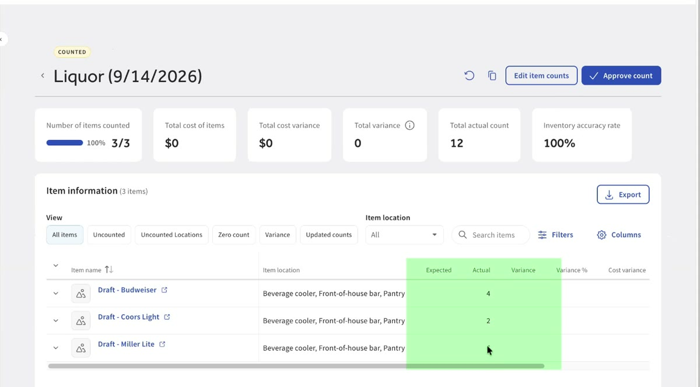

Do this as soon as onboarding is finished. It's a critical part of getting set up properly.
Toast IQ Inventory is a perpetual inventory system. It continuously calculates how much you should have on hand, based on activity like sales and invoice receipts.
A stock count is how you tell Toast what's really on the shelf, so the two can be compared and variances spotted.
Before you count, decide where you count. Item locations are the physical places where your team counts inventory. Find them in Settings → Item locations.
The easiest way to decide: how do I want to divide up the work on count day?



Next, decide what and when you count. Go to Stock counts → Templates and create a count template.
Templates automate your recurring counts. You choose what to count and how often, and Toast creates the count when it's due.
For example, count liquor every week, and do a full food and beverage count once a month. Create one template for each, pick the schedule, and add the items that belong in it.
Save the template, and you're done.



When it's time, Toast generates the count. Open it and you'll see the item locations that need counting.
On your first few counts, some items may not be mapped to a physical location yet. That's fine. Tell Toast where an item is stored and counted and it remembers, so your count sheets get more useful as you go.



When every location is counted, submit the count. Toast compares what you actually counted with what the perpetual inventory predicted you should have. The difference is your actual versus theoretical variance.
When something doesn't match, open that item's inventory activity to investigate what may have caused the gap.

Set up your locations, schedule a template, count, and submit. Each count after that helps you understand the difference between what Toast expects and what's on your shelves.